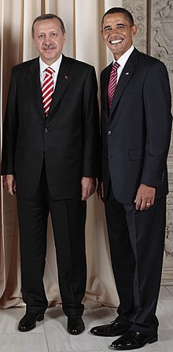

A suit is a set of clothes comprising a suit jacket, or coat, and trousers. When of identical textile, and worn with a collared dress shirt, necktie, and dress shoes, it was traditionally considered informal wear in Western dress codes. The lounge suit originated in 19th-century Britain as more casual wear alternative for sportswear and British country clothing. After replacing the black frock coat in the early 20th century as regular daywear, a sober one-coloured suit became known as a lounge suit. A darker, understated lounge suit for professional occasions became known as a business suit.
Suits are offered in different designs and constructions. Cut, and cloth, whether two- or three-piece, single- or double-breasted, vary, in addition to various accessories. A two-piece suit has a jacket and trousers, a three-piece suit adds a waistcoat (known as a vest in North America).[2] Hats were almost always worn outdoors (and sometimes indoors) with all men's clothes until the counterculture of the 1960s in Western culture. Informal suits have been traditionally worn with a fedora, a trilby, or a flat cap. Other accessories include handkerchief, suspenders or belt, watch, and jewelry.
Other notable types of suits are for semi-formal occasions dinner suit (black tie) and the black lounge suit (stroller), both which arose as less formal alternatives for the formal wear of the dress coat for white tie, and the morning coat with formal trousers for morning dress, respectively.
Originally, suits were always tailor-made from the client's selected cloth. These are now known as bespoke suits, custom-made to measurements, taste, and style preferences. Since the 1960s, most suits are mass-produced ready-to-wear garments. Currently, suits are offered in roughly four ways: